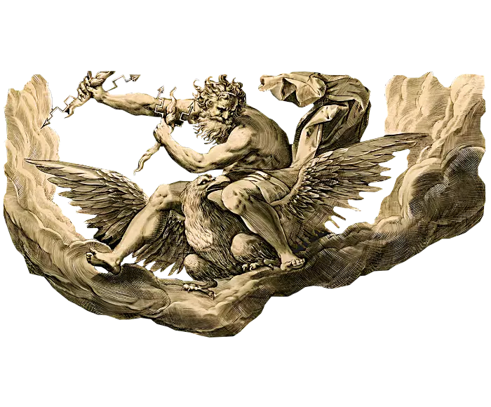

Zeus, Deus do Olipo, céus e trovões.
Zeus é uma divindade mitológica grega.
É considerado o senhor dos deuses e dos homens que habitavam
o monte Olimpo na Grécia antiga.
As divindades mitológicas tinham
nas mãos o destino dos homens.
Regiam o mundo e conduziam
o espetáculo da vida.
Eram venerados sob a
forma terrena, como Zeus,
pai dos deuses gregos.
Suas histórias atravessaram séculos.
Hoje elas são
objeto de estudo que buscam
explicação humana para fatose seres
sobre-humanos.
A mitologia grega divergia das outras
sobretudo por seus deuses
serem semelhantes ao homem. Zeus
era filho de Cronos, o mais forte dos titãs,
que casou-se com sua irmã Reia.
Tiveram muitos filhos:
Zeus, Poseidon, Hades (Plutão), Hera,
Héstia e Deméter. Temendo a rivalidade
de seus filhos, orientado por Gaia
(mãe terra) e Urano (céu),
Cronos devorou-os logo ao nascer,
exceto Zeus, que quando
estava para nascer Reia procurou Gaia
que concebeu um plano para salvá-lo.
Zeus nasceu na ilha de Creta
e Reia entregou uma pedra
enrolada em roupas de bebê que Crono
engoliu. Zeus foi criado na caverna no monte Ida,
aos cuidados de Gaia.
Quando se tornou adulto, Zeus
derrotou o pai
e o obrigou a ressuscitar
seus irmãos.